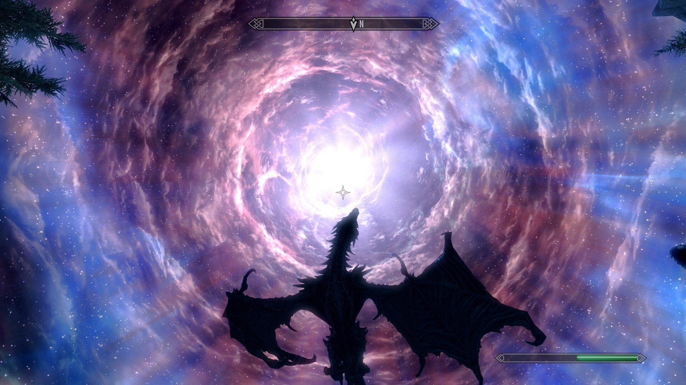
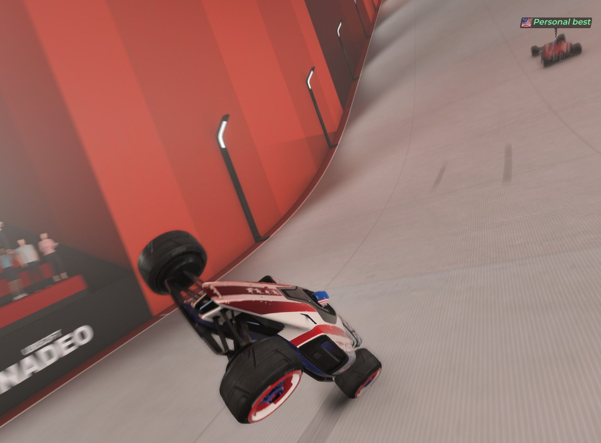
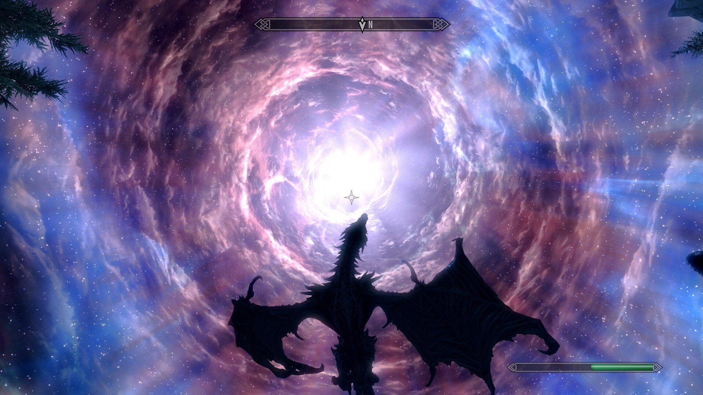
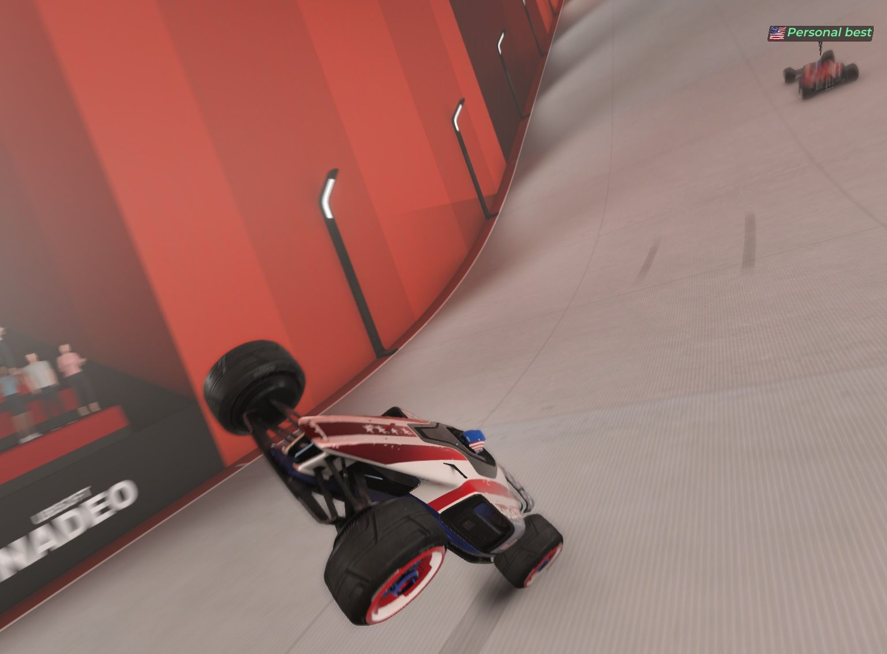

Video Games and Virtual Reality
Whether I'm just hanging out online with friends in Counter-Strike or Golf With Your Friends, or
being transported to another world in Half-Life: Alyx and Destiny 2, video games are my favorite way to pass the time.
This has become especially true with the advent of consumer virtual reality, where I can put on my Valve Index and become completely immersed in an entirely new universe.
Ever since trying VR for the first time years ago I have been fascinated both by the technology behind it, and the potential it has for incredible experiences.
I genuinely believe it is the future of entertainment, and hope to be a part of making that future a reality.
 


